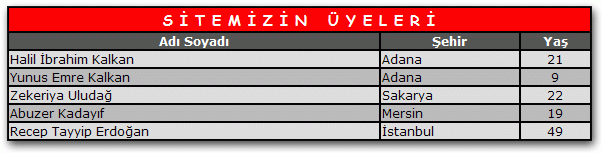
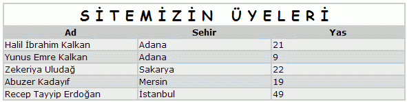

"Tablom Projesi"
1. Giriþ;
Asp.Net ile kullanabileceðiniz birkaç tablo oluþturma bileþenleri var. Örneðin DataGrid ve Table sýnýflarý bunlardan ikisi. Bunlarla hemen hemen her türlü tablo oluþturabilirsiniz. Benim yaptýðým "Tablom" ile de kolaylýkla çýktýsý Html kodu olan tablolar oluþturabilirsiniz. Bu sýnýfýn yapýlmasýnýn asýl amacý veri tablosu oluþturmaktýr. Her kolonu ve her satýrý tek tek belirleyebileceðiniz gibi, isterseniz doðrudan veritabanýndan aldýðýnýz DataTable nesnesini "Tablom" a baðlayarak hiçbir zahmete girmeden tabloyu oluþturabilirsiniz. Ýki þekilde de veritabanýndan alýnan verileri düzgün bir tablo halinde kullanýcýya kolayca gösterebilirsiniz.
2. Sýnýflar;
"Tablom" 5 adet sýnýftan oluþmaktadýr. Bunlar Tablom, Kolonum, Satirim, Hucrem ve TablomBicim olup aþaðýda bütün sýnýflarýn özellik ve yöntemleri (metodlarý) verilmiþtir. Çok fazla özellik var gibi gelebilir ancak bunlarýn çoðunun varsayýlan deðerleri olduðu için ayarlanmadan da tablo oluþturulabilir.
|
"Tablom" Sýnýfý |
|||||||||||||||||||||||
| Bu sýnýf esas tabloyu oluþturur. Diðer sýnýflar bu tablonun özelliklerini ve içeriðini belirler ve sonuçta bu sýnýfýn yöntemleriyle dahil edilirler. | |||||||||||||||||||||||
|
|
||||||||||||||||||||||
|
"Kolonum" Sýnýfý |
|||||||||||||||||||||||
| Bu sýnýf ile tablonun kolonlarý ayarlanýr ve sonuçta Tablom.KolonEkle yöntemiyle tabloya eklenir. | |||||||||||||||||||||||
|
|
||||||||||||||||||||||
|
"Satirim" Sýnýfý |
|||||||||||||||||||||||
|
Bu sýnýf tablodaki verileri belirler ve her satýr oluþturulduktan sonra Tablom.KolonEkle yöntemiyle tabloya eklenir. Bir tabloya mutlaka Kolon Sayýsý kadar hücre eklenmelidir. |
|||||||||||||||||||||||
|
|
||||||||||||||||||||||
|
"Hucrem" Sýnýfý |
|||||||||||||||||||||||
| Bu sýnýf ile tablodaki hücreler tek tek oluþturulur ve ilgili satýra Satirim.HucreEkle yöntemiyle eklenir. | |||||||||||||||||||||||
|
|
||||||||||||||||||||||
|
"TablomBicim" Sýnýfý |
|||||||||||||||||||||||
|
|
||||||||||||||||||||||
3. Kullanýmý;
Genel olarak iki çeþit kullanýmý vardýr. Tabloyu veritabanýndan alýp satýr ve kolonlarý kendiniz oluþturabilirsiniz ya da direk olarak veritabanýndan aldýðýnýz verileri doldurduðunuz DataTable nesnesini Tablom sýnýfýna baðlayabilirsiniz.
3.1 Satýr ve kolonlarý oluþturarak kullanmak;
Bu kullanýmda önce veritabanýndan verileri alýrsýnýz, sonra gösterilecek her kolon için bir kolonum nesnesi oluþturursunuz. Daha sonra her satýrýn her hücresini tek tek oluþturup tabloya eklersiniz. Daha sonra tablonun görünüm özelliklerini de deðiþtirdikten sonra HtmlKoduUret() yöntemini kullanarak tabloyu oluþturursunuz. Ve son olarak da ...Controls.Add(new LiteralControl(Tablom.HtmlKodu)) þeklinde bir PlaceHolder'a ya da doðrudan sayfaya ekleyebilirsiniz. Þimdi adým adým birlikte bir tablo oluþturuyoruz. Sonuçta oluþturduðumuz tablo þöyle olacak:
|
 |
3.1.1 Veritabanýndan verileri almak;
Tablo oluþtururken verileri veritabanýndan almak daha avantajlýdýr. Bu þekilde basit birkaç döngü kurarak tüm verileri tabloya ekleyebilirsiniz. Aþaðýdaki gibi veritabanýna baðlanýp veritabanýndaki istediðiniz verileri bir DataTable nesnesine aktarýn:
|
Dim
Baglanti As
New
OleDb.OleDbConnection("Provider=Microsoft.JET.OLEDB.4.0;Data Source=" &
Server.MapPath("db.mdb")) Dim Sorgu As String = "SELECT Ad,Sehir,Yas FROM Kisiler" Dim Komut As New OleDb.OleDbCommand(Sorgu, Baglanti) Dim Adaptor As New OleDb.OleDbDataAdapter(Komut) Dim vTablo As New DataTable ' Veri Tablosu Adaptor.Fill(vTablo) |
3.1.2 Tablo için gerekli deðiþkenleri oluþturmak
Þimdi tabloyu oluþturmak için gerekli deðiþkenleri tanýmlýyoruz:
|
Dim
birTablo As
New Tablom Dim birHucre As Hucrem Dim birSatir As Satirim Dim birKolon As Kolonum Dim birBicim As New TablomBicim |
3.1.3 Tablonun kolonlarýný oluþturmak;
Þimdi tablomuzdaki kolonlarý tek tek oluþturalým. Burada Ad-Soyad, Þehir ve Yaþ adlý 3 kolon olacak:
| birKolon =
New Kolonum birKolon.Baslik = "Adý Soyadý" birKolon.Genislik = "%40" birTablo.KolonEkle(birKolon) birKolon = New Kolonum birKolon.Baslik = "Þehir" birKolon.Genislik = "%40" birTablo.KolonEkle(birKolon) birKolon = New Kolonum birKolon.Baslik = "Yaþ" birKolon.Genislik = "%20" birKolon.icerikHizalama = "center" birTablo.KolonEkle(birKolon) |
Gördüðünüz gibi 3 adet kolon kolayca oluþturulup tabloya ekleniyor.
3.1.4 Tablonun satýrlarýný oluþturmak;
Þimdi asýl önemli olan kýsma, tablonun satýrlarýný oluþturmaya, yani verileri tabloya yazmaya geldik. Bunu da DataTable nesnesinin satýrlarýný kullanarak kolaylýkla yapýyoruz:
|
Dim
Satir As
DataRow 'Geçici Datarow nesnesi For Each Satir In vTablo.Rows birSatir = New Satirim birHucre = New Hucrem birHucre.Metin = Satir("Ad") birSatir.HucreEkle(birHucre) birHucre = New Hucrem birHucre.Metin = Satir("Sehir") birSatir.HucreEkle(birHucre) birHucre = New Hucrem birHucre.Metin = Satir("Yas") birSatir.HucreEkle(birHucre) birTablo.SatirEkle(birSatir) 'satýr ekleniyor Next |
Gördüðünüz gibi her hücre tek tek oluþturulup satýra ekleniyor, en son da satýr tabloya ekleniyor. Bu iþlem vTablo nesnesinin her satýrý için yapýlýyor.
3.1.5 Tablonun görünüm özelliklerini ayarlamak;
Hiç görünüm özelliði ayarlamadan da tablo yapýlabilir ama tablolarýnýzý görünüm olarak özelleþtirmek ve güzel renkler kullanmak isterseniz bu özellikleri kullanabilirsiniz. Tablonun bir özelliðini deðiþtirmenin iki yöntemi var. Birincisi doðrudan Tablom nesnesinin Bicim özelliðinden þu þekilde yapýlabilir:
| birTablo.Bicim.Hizalama = "left" ' Tablo sola hizalanýyor |
Ya da bir TablomBicim nesnesi oluþturulup bu nesnede gerekli deðiþiklikler yapýldýktan sonra Tablo'nun Bicim nesnesine atanabilir:
|
Dim
birBicim As
New
TablomBicim
birBicim.Genislik = "60%" birTablo.Bicim = birBicim |
Hangisini uygulayacaðýnýz size kalmýþ ama ikinci yöntem daha kullanýþlýdýr. Örneðin birden çok tablonuz varsa ve her tablonun görünümü ayný olacaksa bir tane TablomBicim bicimi oluþturup, deðiþiklikleri bu nesne üzerinde yapabilir ve tüm tablolarýn Bicim özelliðini bu nesneye eþitleyebilirsiniz.
3.1.6 Tabloyu sayfaya eklemek;
Tabloyu sayfaya eklemeden önce Baþlýðýný belirleyelim ve Html kodunu üretelim:
| birTablo.Baslik = "S
Ý T E M Ý Z Ý N   Ü Y E L E R Ý" birTablo.HtmlKoduUret() |
Artýk tabloyu sayfaya ekleyebiliriz. Bunu birkaç yoldan yapabilirsiniz. En iyi yol önce asp.net sayfanýzda, tablonun görünmesini istediðiniz yere <asp:PlaceHolder ID="PhTablo1" Runat="Server"></asp:PlaceHolder> benzeri bir kod ile bir PlaceHolder kontrolü eklemek ve ardýndan kod bölümüne
| PhTablo1.Controls.Add(New LiteralControl(birTablo.HtmlKodu)) |
kodunu eklemektir. Diðer bir yöntemse sayfaya direk olarak eklemektir. Bu da þu kodla yapýlabilir:
| Page.Controls.Add(New LiteralControl(birTablo.HtmlKodu)) |
Artýk tablonuz hazýr. Burada birçok özelliði kullanmadýk. Tüm özellikler için 2. bölüme bakabilirsiniz.
3.2 Doðrudan DataTable' a baðlayarak kullanmak;
Bu þekilde kullaným çok kolaydýr. Sadece bu kadar kodla tablo oluþturulabilir:
|
'Nesneler Dim Baglanti As New OleDb.OleDbConnection("Provider=Microsoft.JET.OLEDB.4.0;Data Source=" & Server.MapPath("db.mdb")) Dim Sorgu As String = "SELECT Ad,Sehir,Yas FROM Kisiler" Dim Komut As New OleDb.OleDbCommand(Sorgu, Baglanti) Dim Adaptor As New OleDb.OleDbDataAdapter(Komut) Dim vTablo As New DataTable Dim birTablo As New Tablom
'
Veritabanýndan veriler alýnýyor 'Birkaç
özellik ayarlanýyor (isteðe baðlý) 'Tablo
oluþturuluyor 'Sayfaya
ekleniyor |
Burada önemli bir nokta var. Eðer kolon isimlerini direk olarak veritabanýndan almak istemiyorsanýz önce kolonlarý kendiniz (daha önceki yöntemle) oluþturmalýsýnýz ve birTablo.VeriTablosuAl(vTablo, False) þeklinde kullanmalýsýnýz. Buradaki False ifadesi ile kolonlarýn veritabanýndan alýnmamasýný söylemiþ oluyorsunuz. Yukarýdaki kodun çýktýsý aþaðýdaki gibi oldu:
|
 |
4. Uyarýlar;
Tablolarý hazýrlarken dikkat etmeniz gereken hususlar var. Bunlar genel olarak þöyle:
Eðer kolon ve satýrlarý kendiniz oluþturacaksanýz kolon sayýsýný baþtan belirlemeli ve kolon geniþliklerinin toplamýnýn tablonun geniþliði kadar olmasýný saðlamalýsýnýz. Örneðin yüzde cinsinden deðer veriyorsanýz kolonlarýn geniþlikleri toplamý her zaman %100 olmalýdýr.
Her satýrý oluþtururken o satýra ekleyeceðiniz hücrelerin sayýsý da kolon sayýsý kadar olmalýdýr. Fazla ya da eksik olursa hata oluþur.
Ýlk önce kolonlarý, sonra satýrlarý oluþturmalýsýnýz. Eðer Tablom.VeriTablosuAl() yöntemini kullanacaksanýz ve kolonlarý kendiniz oluþturmak istiyorsanýz bunu Tablom.VeriTablosuAl() yönteminden önce yapmalýsýnýz.
5. Yükleme Adresi;
Tablom sýnýflarýný projelerinizde kullanmak için aþaðýdaki baðlantýya týklayarak zip dosyasýný yükleyin ve zip dosyasý içerisinden çýkan 'tablo.vb' dosyasýný projenize dahil edin:
6. Ýletiþim;
| Bu projeyi hazýrlayan: | Halil Ýbrahim Kalkan |
| E-posta adresi: | hi_kalkan@yahoo.com |
| Web sitesi: | http://www.kalkan.cjb.net |
| Tarih: | 2 Aðustos 2004 |